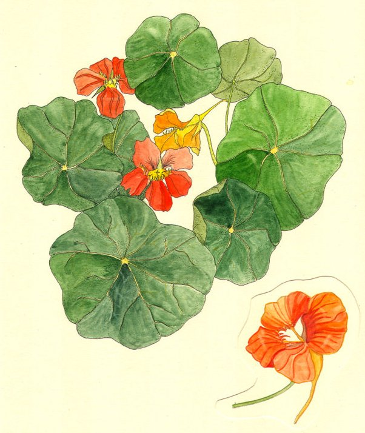

Calamus
altérant (macération) - 100 po
↪ plante - littoral - été
↪ plante - littoral - été
 Le calamus est une plante aquatique semblable aux nénuphars qui pousse dans des climats chauds et humides à la surface d'étendues d'eau comme des lacs ou des étangs. Sa macération, qui entre autres ingrédients comprend plusieurs petits insectes, est une préparation recherchée car elle permet de récupérer l'ouïe.
Le calamus est une plante aquatique semblable aux nénuphars qui pousse dans des climats chauds et humides à la surface d'étendues d'eau comme des lacs ou des étangs. Sa macération, qui entre autres ingrédients comprend plusieurs petits insectes, est une préparation recherchée car elle permet de récupérer l'ouïe.
Une personne qui souffre temporairement de l'état assourdi récupère immédiatement l'ouïe. De plus, une personne définitivement sourde pour des raisons naturelles a 50 % de chance de récupérer une audition équivalente à environ 25 % d'une ouïe normale durant 1 heure.

Illustration reproduite avec l'aimable autorisation de Christine Achard
Illustration reproduite avec l'aimable autorisation de Christine Achard
Recueil des plantes d´AideDD